From TA sessions at my university to robot workshops in Phnom Penh to midnight amphibian surveys — 643 logged volunteer hours, and the teaching that sharpened everything I build.
Selected as TA for two courses: NS200 Physics in the Modern Society and XD221 Quantitative Thinking in the Sciences.
For two consecutive summers, I traveled to Phnom Penh as a STEM instructor for 30 Cambodian high-school science teachers, in a program run by KOICA and the Korea Productivity Center: "STEM Training Practice for Physics Using Robots and STEM Education."
When a robot fails in front of 30 teachers and a translator, you learn very quickly what you actually understand.
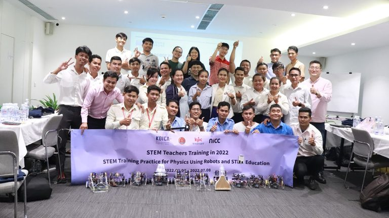
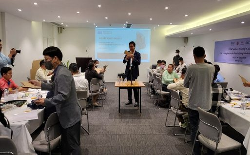
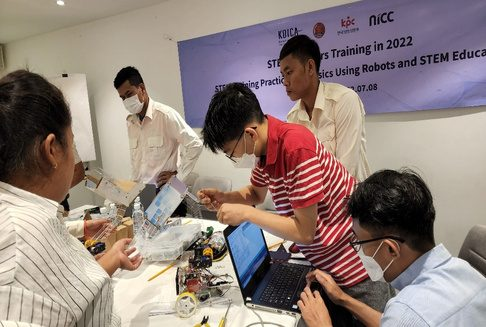
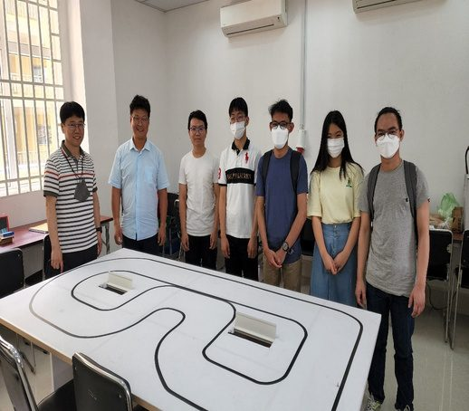
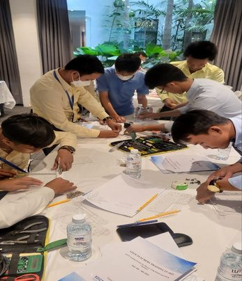
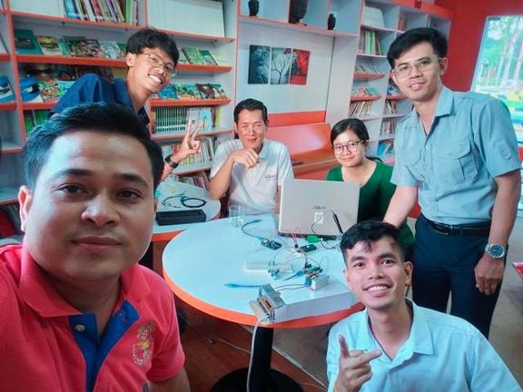
Geumcheon's science-festival ecosystem is where I built my first robots — and where I first went back to help the next group of kids build theirs.
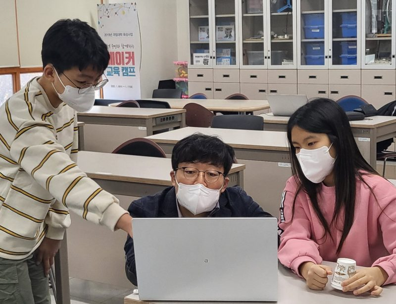
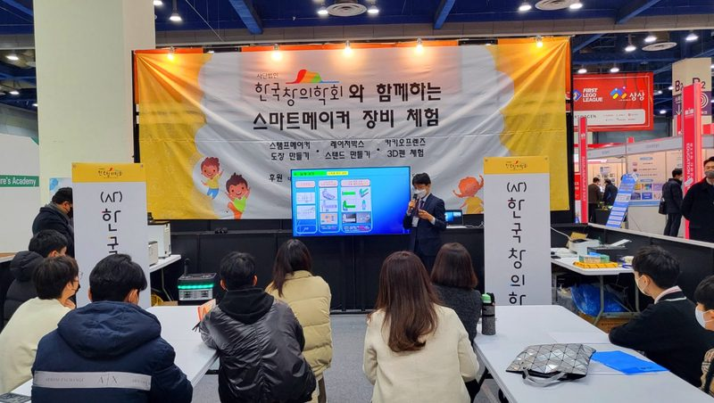
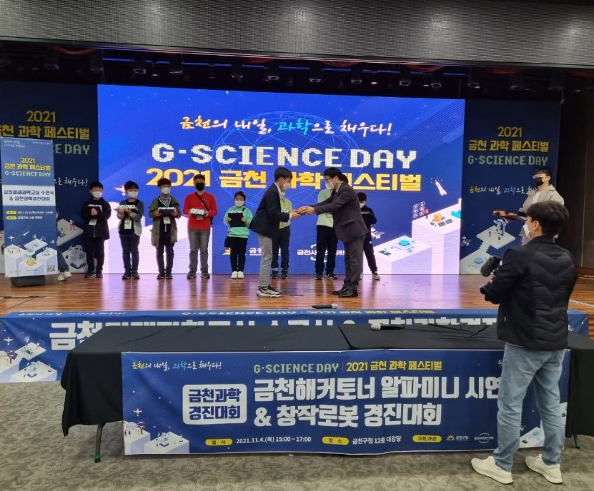
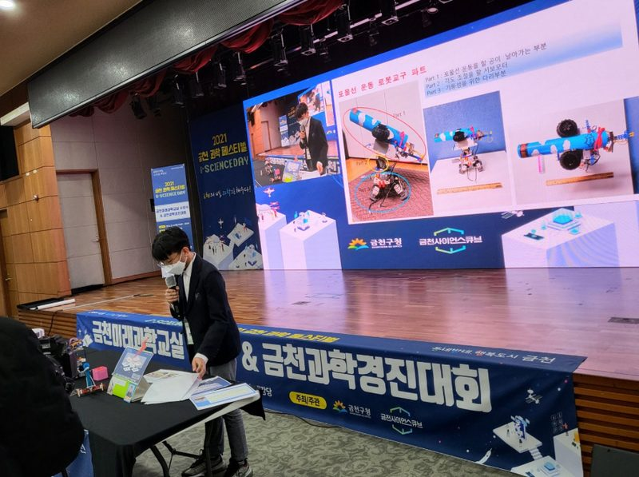
Night surveys of endangered frog and salamander populations in urban wetlands — 69 hours of fieldwork feeding municipal conservation records.
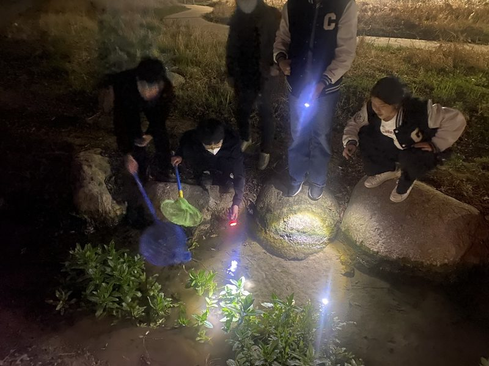
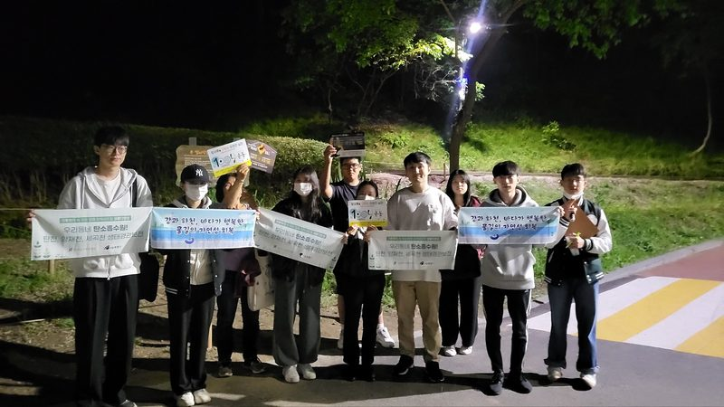
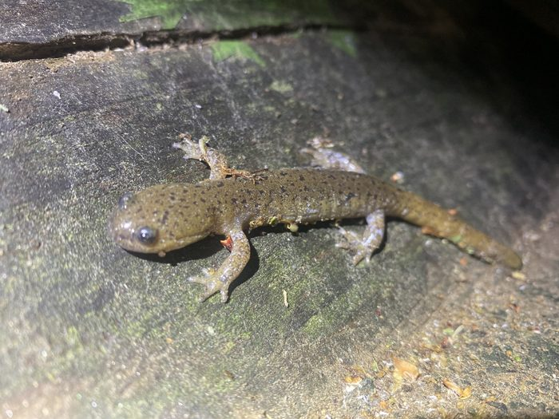
The rest of the 643 hours, without cameras:
Prospective PhD student, Fall 2027 — computer architecture & systems.
dchun4748@gmail.com